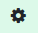

En aquest primer pas hem d'identificar les àrees on es poden instal·lar panells fotovoltaics.
Mitjançant el desplaçament al mapa podràs localitzar la zona d'interès amb l'ajuda dels camps de localització o si les coneixes introduint directament les coordanades latitud, longitud al camp corresponent.
Un cop visualitzada la zona de treball hauràs de dibuixar les àrees, com a mínim una, on es poden instal·lar els panells.
L'àrea es tancarà automàticament quan facis un doble clic.
Un cop definida l'àrea veuràs que apareix una fila a la taula que hi ha sota el mapa, on tens les dades de l'àrea definida. Ara acabarem de configurar-ne els detalls.
Un cop definida la localització i configuració de la base on s'instal·laran els panells pots donar a la fletxa "Següent" per passar el proper pas.
Ara procedirem a definir el perfil de consum i la tarifa actual del contracte amb la comercialitzadora des de la taula.
Veureu un mapa pintat amb el vostre perfil de consum. Fent un clic sobre aquest podràs veure el perfil de consum d'un dia concret.
Un cop aconseguit aquest punt pots donar al botó “Següent”.
En aquesta pestanya s'observaran els resultats de la primera proposta que fa el sistema. En aquest cas, el criteri d'assignació de panells és:
A la resta de la pestanya podeu veure un conjunt de dades d'interès obtingudes d'aquesta configuració.
En aquest moment pot ser interessant que observis la resta de les pestanyes per avaluar la situació i abans de decidir canviar el nombre de panells o la potència individual dels mateixos.
En tot cas, des d'aquesta pestanya podreu canviar els panells assignats a cada base segons el vostre criteri. Solidar verificarà que no pots posar més panells que els que l'àrea definida al pas 1 per a casa base permet.
Aquí pots veure quin és el resultat des del punt de vista econòmic financer de la instal·lació dels panells definits al pas 3.
És important destacar alguns camps existents en aquesta pestanya:
Amb les dades definides abans l'aplicació mostrarà una taula financera amb l'estudi del retorn de la inversió esperat.
Per a aquesta taula és fonamental definir als camps mostrats amb aquesta finalitat si hi ha algun tipus de subvenció a aplicar de fons Next Generation o la reducció de l'IBI que apliquen alguns ajuntaments.
En aquesta pestanya s'observen alguns gràfics que mostren el comportament mensual del sistema proposat.
Es mostra un resum de totes les variables introduïdes i calculades per a aquesta simulació.
Es poden fer diversos cicles de proves canviant la configuració de la instal·lació <Panels> o <Potència per panell>. Aquest canvi es pot fer des de la pestanya <Balanç energia>. L'aplicació farà els càlculs corresponents de manera automàtica.
A la pestanya <Paràmetres>, que s'activa des de la icona d'eines, es poden actualitzar diversos paràmetres utilitzats al càlcul. Els canvis realitzats en aquesta pestanya es reflectiran en el proper càlcul.
Des del menú situat a la part superior dreta es poden seleccionar les opcions següents, d'esquerra a dreta:
 |
Formulari de contacte des d'on ens podeu enviar els vostres comentaris, així com informar de possibles errors o millores que considereu oportunes. |
 |
Genera un informe en PDF de la simulació activa. |
|  |
Eines per canviar algun dels paràmetres utilitzats per laplicació. |
 |
Obre aquest document. |
 |
Habilita un panell a la dreta de la pantalla amb una guia explicativa de la pestanya on et trobis en aquell moment. |